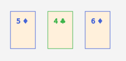

Notion de modèle #
%!s().1
Notion de modèle
#
-
Un modèle est une classe qui représente des données importantes pour un programme
-
Prenons par exemple un petit tableau de cartes issu de l’atelier 1.1:

-
Le modèle est la classe
MonTriLibre -
Il faut aussi les objets
Cartepour bien représenter les données -
Les classes complémentaires comme
Cartesont parfois appelées des valeurs (ou des sous-modèles)
%!s().2
Un modèle a des comportements (méthodes)
#
-
Comme
MonTriLibreest une classe, le modèle contient aussi des méthodes -
Par exemple:
boolean isSortedpour déterminer si les cartes sont triéesint testCaseSizequi retourne la taille de l’exemple (le nombre de cartes)
-
La valeur
Cartecontient aussi des méthodes, par exemple:int compareTopour indiquer si la carte est plus petite qu’une autre carteboolean isNullCardpour indier s’il s’agit vraiment d’une carte ou d’une case vide
-
On va voir à la session suivante qu’une application graphique est souvent divisée en trois parties:
- le modèle: contient les données et les méthodes pour manipuler les données
- la vue: contient le code pour afficher les données
- le contrôleur: contient le code pour créer les vues et les modèles et autres tâches
%!s().3
Une application a souvent plusieurs modèles
#
-
Par exemple, l’outil de validation a un modèle a trois modèles
- un modèle pour les cartes et un pour les cas de tests

- un modèle pour des paramètres
%!s().4
Modèle en JSON
#
-
JSON n’a pas de notion de classe
-
Dans ce cours, on va utiliser la clé spéciale
_Cpour identifier la classe -
On a donc la représentation JSON suivante pour un 4♧:
{ "_C": "Carte", "numero": 4, "sorte": "TREFLE" } -
Et le JSON suivant pour une liste de trois cartes
[ { "_C": "Carte", "numero": 5, "sorte": "CARREAU" }, { "_C": "Carte", "numero": 4, "sorte": "TREFLE" }, { "_C": "Carte", "numero": 6, "sorte": "CARREAU" } ] -
Et finalement le JSON suivant pour le modèle
MonTriLibre
{
"_C": "MonTriLibre",
"cartes": [
{
"_C": "Carte",
"numero": 5,
"sorte": "CARREAU"
},
{
"_C": "Carte",
"numero": 4,
"sorte": "TREFLE"
},
{
"_C": "Carte",
"numero": 6,
"sorte": "CARREAU"
}
],
"siTrie": false
}